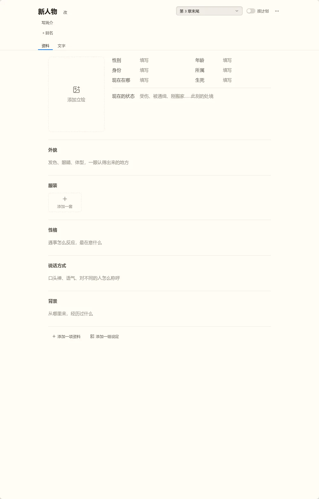
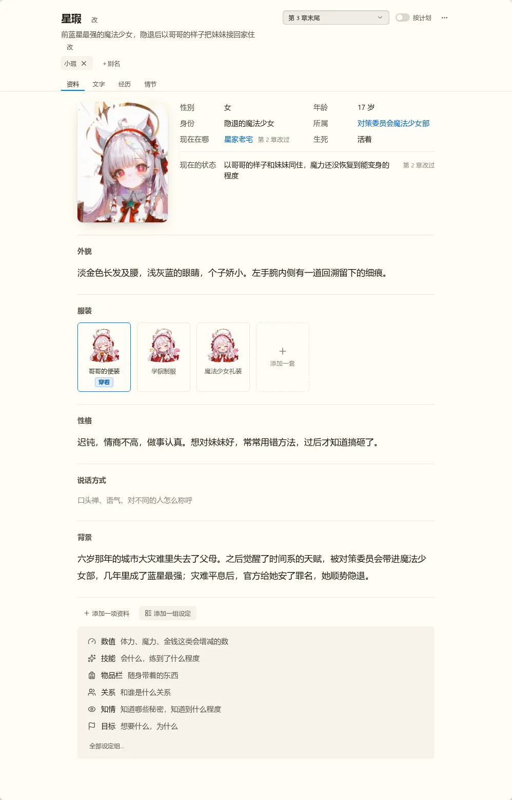

第 1 轮：人物的角色卡
现状与参照
现在的人物分页
现在点“改”
角色卡照这个样子做？
推荐同意：整页只有立绘用力，其余都是字；顺序是长什么样、是谁、此刻怎样，再往下是成段的文字。
填好的人物
刚新建的人物

手机宽
改一项时就地展开，还是沿用页面顶上的确认条？
推荐 A 就地展开：眼睛不用离开这一项；“一直是这样”还是“从这一章起”在保存旁边选，缺省是前者。
A 就地展开
B 页面顶上的确认条
“添加”分成两个入口：添加一项资料、添加一组设定？
推荐同意：一项资料是给这个人物多一栏（预设里点一下，或者自己写名字）；一组设定是多一个分区，只列适用于人物的。
添加一项资料
添加一组设定

设定组加多了以后：都排在“资料”这一页，还是每组各一个分页？
推荐 A 都排在这一页：分页不随设定组变多；只有要大块地方的（数值的流水、经历、情节）才有自己的分页。
A 都排在“资料”这一页
B 每组各一个分页
已定
- 版式用角色卡：左边立绘，右边基本资料，下面分区就地填（2026-11-24）
- 四样预设都要：预设的资料字段、可自己填的建议值、数值的预设项、新建时的模板；模板不写示例内容（2026-11-24）
- 人物只放最通用的；形象（立绘、外貌、服装、现在穿的）、数值、技能、物品栏、关系各自成组（2026-11-24）